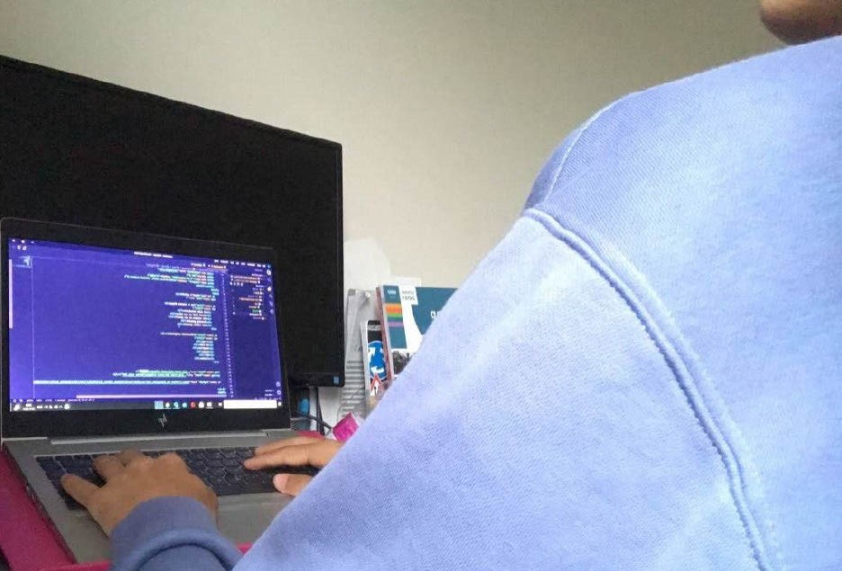
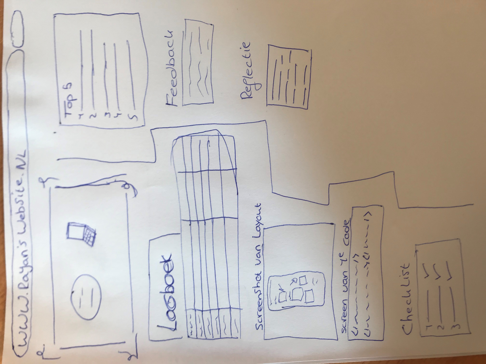

Rayan's website
Top 5 leukste dingen
Gedownloade programma's
Foto van mijn schets
Feedback van een klasgenoot
Abdel:"het ziet er goed uit maar de opmaak kan iets beter"
Foto van mijn eerste code
Mijn reflectie
Ik vond de opdracht best wel leuk. Ik heb veel codeer regels geleerd en toegepast in mijn website.
Voor mijn gevoel vond ik dat ik niet echt hard heb gewerkt, want als dat wel zo was dan zou ik veel eerder klaar zijn.
Dus de volgende keer ga ik meer serieuzer aan het werk zodat ik eerder klaar ben en niet hoef te stressen.
Link van mijn logboek
logboek link